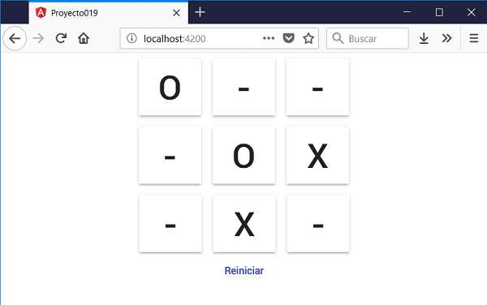

Es muy importante cuando trabajamos con Angular Material tener la documentación oficial de esta librería de componentes. Debemos acceder a Componentes en Angular Material
La etiqueta 'button' de HTML es afectada por esta librería, veremos que pasos debemos dar para utilizar 'button' con Material.
Crear un tablero de Ta Te Ti con etiquetas 'button', afectar dichos controles con Material.
Crearemos primero el proyecto
ng new proyecto019
Procedemos a instalar todas las dependencias de Angular Material ayudados por Angular CLI mediante el comando 'add':
ng add @angular/material
Modificamos el archivo 'app.module.ts' para indicar que utilizaremos el módulo 'MatButtonModule':
import { BrowserModule } from '@angular/platform-browser';
import { NgModule } from '@angular/core';
import { AppComponent } from './app.component';
import { BrowserAnimationsModule } from '@angular/platform-browser/animations';
import { MatButtonModule } from '@angular/material/button';
@NgModule({
declarations: [
AppComponent
],
imports: [
BrowserModule,
BrowserAnimationsModule,
MatButtonModule
],
providers: [],
bootstrap: [AppComponent]
})
export class AppModule { }
Luego en la componente principal implementamos la interfaz visual y la lógica del juego del Ta Te Ti.
El archivo 'app.component.ts':
import { Component } from '@angular/core';
@Component({
selector: 'app-root',
templateUrl: './app.component.html',
styleUrls: ['./app.component.css']
})
export class AppComponent {
posiciones=[['-','-','-'],
['-','-','-'],
['-','-','-']];
jugador='O';
presion(fila:number,columna:number) {
if (this.posiciones[fila][columna]=='-') {
this.posiciones[fila][columna]=this.jugador;
this.verificarGano('X');
this.verificarGano('O');
this.cambiarJugador();
}
}
reiniciar() {
for(let f=0;f<3;f++)
for(let c=0;c<3;c++)
this.posiciones[f][c]='-';
}
cambiarJugador() {
if (this.jugador=='O')
this.jugador='X';
else
this.jugador='O';
}
verificarGano(ficha: string) {
if (this.posiciones[0][0]==ficha && this.posiciones[0][1]==ficha && this.posiciones[0][2]==ficha)
alert('Gano:'+ficha);
if (this.posiciones[1][0]==ficha && this.posiciones[1][1]==ficha && this.posiciones[1][2]==ficha)
alert('Gano:'+ficha);
if (this.posiciones[2][0]==ficha && this.posiciones[2][1]==ficha && this.posiciones[2][2]==ficha)
alert('Gano:'+ficha);
if (this.posiciones[0][0]==ficha && this.posiciones[1][0]==ficha && this.posiciones[2][0]==ficha)
alert('Gano:'+ficha);
if (this.posiciones[0][1]==ficha && this.posiciones[1][1]==ficha && this.posiciones[2][1]==ficha)
alert('Gano:'+ficha);
if (this.posiciones[0][2]==ficha && this.posiciones[1][2]==ficha && this.posiciones[2][2]==ficha)
alert('Gano:'+ficha);
if (this.posiciones[0][0]==ficha && this.posiciones[1][1]==ficha && this.posiciones[2][2]==ficha)
alert('Gano:'+ficha);
if (this.posiciones[0][2]==ficha && this.posiciones[1][1]==ficha && this.posiciones[2][0]==ficha)
alert('Gano:'+ficha);
}
}
El template de la componente lo tenemos en el archivo 'app.component.html':
<div style="text-align: center">
<button mat-raised-button (click)="presion(0,0)" class="casilla">{{posiciones[0][0]}}</button>
<button mat-raised-button (click)="presion(0,1)" class="casilla">{{posiciones[0][1]}}</button>
<button mat-raised-button (click)="presion(0,2)" class="casilla">{{posiciones[0][2]}}</button>
<br>
<button mat-raised-button (click)="presion(1,0)" class="casilla">{{posiciones[1][0]}}</button>
<button mat-raised-button (click)="presion(1,1)" class="casilla">{{posiciones[1][1]}}</button>
<button mat-raised-button (click)="presion(1,2)" class="casilla">{{posiciones[1][2]}}</button>
<br>
<button mat-raised-button (click)="presion(2,0)" class="casilla">{{posiciones[2][0]}}</button>
<button mat-raised-button (click)="presion(2,1)" class="casilla">{{posiciones[2][1]}}</button>
<button mat-raised-button (click)="presion(2,2)" class="casilla">{{posiciones[2][2]}}</button>
</div>
<div style="text-align: center">
<button mat-button color="primary" (click)="reiniciar()">Reiniciar</button>
</div>
El archivo de la hoja de estilo de la componente 'app.component.css':
.casilla {
height: 5rem;
margin: 0.5rem;
font-size: 3rem;
}
Si ejecutamos la aplicación podemos ver que las etiquetas 'button' están afectados por Material:
Podemos probar esta aplicación en la web aquí.
Para que la etiqueta HTML sea afectado por Material debemos agregar la propiedad 'mat-raised-button':
<button mat-raised-button (click)="presion(0,0)" class="casilla">{{posiciones[0][0]}}</button>
Otro estilo de botón se logra mediante la propiedad ''mat-button' (no se muestran los bordes del botón):
<button mat-button color="primary" (click)="reiniciar()">Reiniciar</button>
Hay otras variantes de botones en Material:
Hemos utilizado la etiqueta 'button' para definir acciones dentro de nuestra aplicación. Si lo que necesitamos es navegar a otra vista utilizaremos la etiqueta 'a' que perfectamente podemos aplicar las propiedades vistas para la etiqueta 'button'.